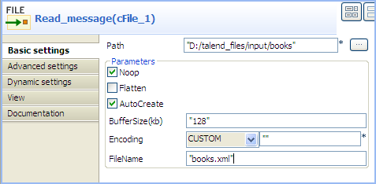
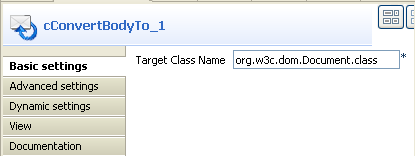
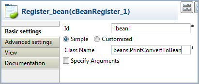
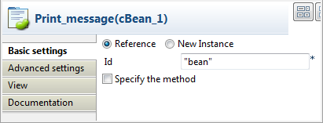
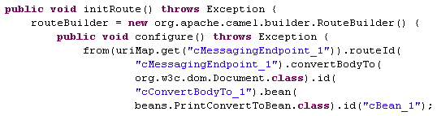
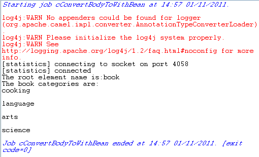

|
Component Family |
Transformation | |
|
Function |
cConvertBodyTo converts the message body to the given class type. | |
|
Purpose |
cConvertBodyTo is used to convert the message body to a given class type. | |
|
Basic settings |
Target Class Name |
Enter the name of the class type that you want to convert the message body to. |
|
Usage |
cConvertBodyTo is used as a middle component in a Route. | |
|
Limitation |
| |
In this scenario, a cConvertBodyTo component is used to convert the body of an XML file into an org.w3c.dom.Document.class. Then a cBean component imports the org.w3c.dom.Document class, checks its content and prints out the root element name and the content of each category element.
The XML file is as follows:
<bookstore>
<bookshelf>
<category>Cooking</category>
<quantity>100</quantity>
</bookshelf>
<bookshelf>
<category>Languages</category>
<quantity>200</quantity>
</bookshelf>
<bookshelf>
<category>Arts</category>
<quantity>300</quantity>
</bookshelf>
<bookshelf>
<category>Science</category>
<quantity>400</quantity>
</bookshelf>
</bookstore>
From the repository tree view, expand the Code node and right click the Beans node. In the contextual menu, select Create Bean.

The New Bean wizard opens. In the Name field, type in a name for the bean, for example, PrintConvertToBean. Click Finish to close the wizard.

Enter the following code in the design workspace.
package beans; import org.w3c.dom.Document; import org.w3c.dom.Element; import org.w3c.dom.NodeList; public class PrintConvertToBean { /** * print input message * @param message */ public static void helloExample(Document message) { if (message == null) { System.out.println("There's no message here!"); return; } Element rootElement = message.getDocumentElement(); if (rootElement == null) { System.out.println("There's no root element here!"); return; } System.out.println("The root element name is:" + rootElement.getNodeName()); System.out.println("The book categories are:"); NodeList types = rootElement.getElementsByTagName("category"); for(int i = 0;i<types.getLength();i++){ Element child = (Element) types.item(i); System.out.println(child.getFirstChild().getNodeValue()); } } }Press Ctrl+S to save your bean.
For more information about creating and using Java Beans, see Talend Open Studio for ESB User Guide.

Drag and drop a cFile, a cConvertBodyTo, a cBean and a cBeanRegister from the Palette onto the workspace.
Link the cFile, cConvertBodyTo and cBean using the Row > Route connection as shown above.
Label the components to better identify their functionality.
Double-click the cFile component to open its Basic settings view in the Component tab.
In the Path field, enter or browse to the path to the source XML file.
If the source file folder contains more than one file, enter the name of the XML file of interest in the FileName field, and leave the other parameters as they are.
Double-click the cConvertBodyTo component to open its Basic settings view in the Component tab.
In the Target Class Name field, enter your target class name, org.w3c.dom.Document.class in this scenario.
Double-click the cBeanRegister component to open its Basic settings view in the Component tab.
In the Id field, enter
"bean".Select the Simple option and in the Class Name field, enter the name of the bean to be invoked, beans.PrintConvertToBean in this scenario.
Double-click the cBean component to open its Basic settings view in the Component tab.
Select Reference and in the Id field, enter
"bean"to call the bean that is registered by the cBeanRegister.Press Ctrl+S to save your Route.
Click the Code tab at the bottom of the design workspace to check the generated code.
As shown above, the message
fromthe endpointRead_message_cFile_1has its body converted toorg.w3c.dom.Document.classbycConvertBodyTo_1, and then processed bybeaninvoked bycBean_1.Press F6 to execute the Route.
RESULT: The root element name and the contents of the category elements are displayed.
